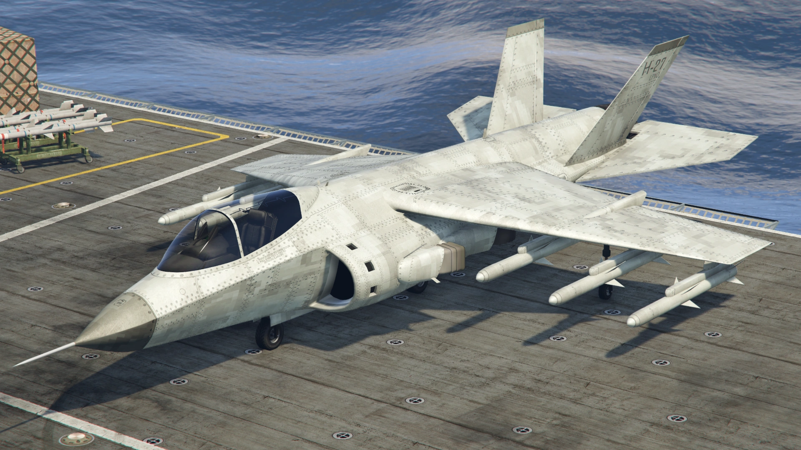
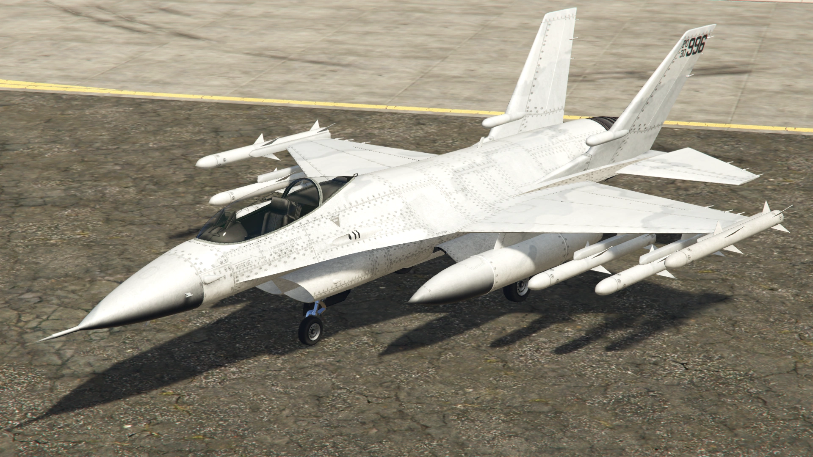

My Website
Warstock Cache & Carry
 Home
Home About us
About us Contact
Contact

Hydra
Aircraft
The Hydra is suggestively based on the British Aerospace Harrier II (formerly known as the Hawker Siddley Harrier), a well-known British fighter jet with Vertical Takeoff and Landing (VTOL) capabilities, with minor detailing from the F-16 Fighting Falcon, such as the cockpit and air intake. The Harrier's influence is further proven by the cheat code that is used to spawn the jet in the PC version: "Jumpjet", which is a nickname for Harrier jets.
P-996 Lazer
Aircraft
The design of the P-996 LAZER is mainly derived from the F-16C Fighting Falcon, evidenced by the entire fuselage, from the nose to the rear, with the two rear downward vertical tail fins, cockpit (with side-mounted control stick), landing gears (main and nose) and wings. The air intake is also derived from the aforementioned aircraft, albeit split into two separate intakes, similar to a Eurofighter Typhoon. Its forward swinging canopy (with zig zag canopy detonation cord), twin vertical stabilizers and horizontal stabilizers are derived from the Lockheed Martin F-35 and X-35. Unlike the F-16, which has only one cannon mounted on the port side, the P-996 LAZER has dual cannons on each side, similar to fighter jets such as the F-20 Tigershark. The Lazer is depicted as carrier-capable, which could possibly be a homage to the Vought model 1600, the carrier-capable version of the F-16.
About me
Arms Dealer
We sold what you want!!
Popular post
Follow me
https://gtamag.com/en/gta-online/dealers/details/warstock-cache-and-carry/3